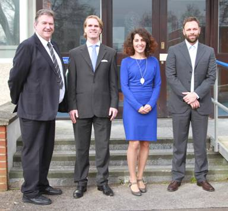

January: a round up on the year's achievements
by Laura Tyzack at 09:00 in Blog
Now we're already a few weeks into the New Year, we thought it would be a great
opportunity to give a round up on last year's achievements. There is no doubt that
2014 has been a busy year for IC-ENC, but we have a lot to show for it. From
welcoming six new members, to launching our ENC Validation training course,
we've been kept on our toes at all times.
2014 has seen a dramatic increase in membership, and IC-ENC welcomes
Suriname, The Philippines, Slovenia, Italy, Egypt and Malaysia to our family of
members, bringing the total number of IC-ENC members to 34. All of these nations
will provide important coverage for the IC-ENC ENC folio, and we are now working
to incorporate all of the ENCs into our database.
As part of a capacity building initiative, IC-ENC successfully launched its ENC
Validation training course in March, delivering the pilot course to three delegates:
two from Greece and one from the Netherlands. The pilot course was a huge
success, and as a result there will be three courses delivered throughout 2015.

×

Pilot ENC Validation training course delegates and Course Instructor Mike Hawes
We had another successful Steering Committee meeting in September, which saw
the highest number of participants to date. It was great to have so many of our
member nations together to discuss issues and ideas, and set the strategic direction
for the year ahead. The end of the meeting saw IC-ENC Chairman Capt. Peter
Kortenoeven complete his two year tenure, followed by the election and
appointment of the new IC-ENC Chairman, Dr. Mathias Jonas, and two Vice
Chairmen, Jens Peter Hartmann and Cdr. Ricardo Lopez Cruz. Capt. Peter
Kortenoeven, and his family, have since temporarily moved to Ethiopia to embrace
the African way of life.

Dr Mathias Jonas
IC-ENC Chairman

Jens Peter Hartmann and Commander Manuel Ricardo Lopez Cruz
IC-ENC Vice Chairmen
In addition to the Steering Committee, IC-ENC has also attended various
Hydrographic commissions and conferences throughout the year. In particular, IC-
ENC attended the Extraordinary International Hydrographic Conference (EIHC) in
October. This was an excellent opportunity to represent IC-ENC globally and to
promote the service which we provide, whilst working in harmony with our RENC
colleagues from PRIMAR. Additionally, it was great to see so many of you there
visiting our exhibition stand.

×

IC-ENC and PRIMAR's joint stand at EIHC 2015
A little closer to home at the IC-ENC UK office, Richard Northover was appointed as
IC-ENC Commercial Manager in March. Richard has been focused on ENC
licensing considerations and Real Time Reporting, amongst other commercial
responsibilities.
Whilst down under at the IC-ENC Australia office, the team has continued to provide
a high level of support to both the local region and to us here at the IC-ENC UK
office with their frequent ideas and suggestions to improve the service that IC-ENC
provides.
Looking to the year ahead, we are excited to continue delivering and improving our
service for our members. We look forward to delivering the first training course of
2015 in February here in Taunton to eleven delegates from Europe and beyond.
Further courses will follow in Australia and Latin America. Not only does the course
emphasise our dedication towards capacity building, but it also shows our
enthusiasm to pass on our ENC expertise to our members, with the anticipated
result of creating and managing a more seamless ENC folio, all for the benefit of the
mariner.
Email a link